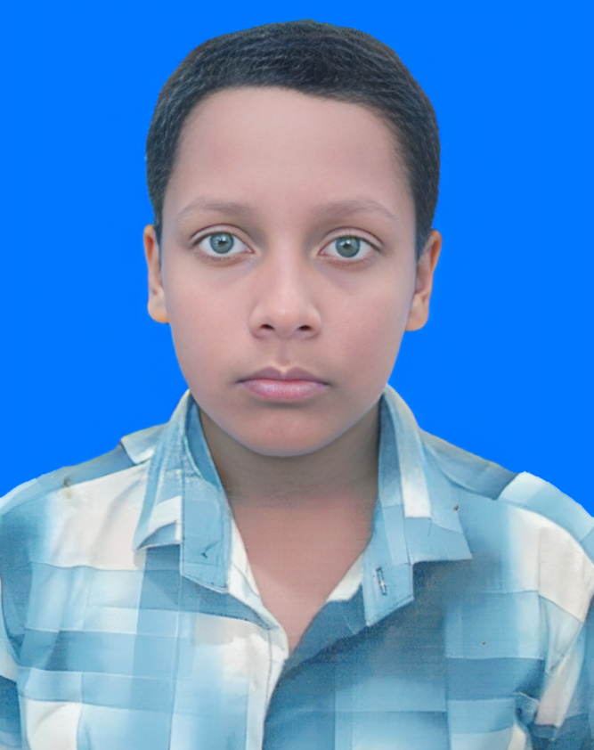

তারিখঃ ২০২৬-০৭-২২
শ্রীপুর পৌরসভা কার্যালয়
শ্রীপুর, গাজীপুর।
স্থাপিতঃ ২০০০ খ্রিঃ
নাগরিকত্ব সনদ পত্র
নাগরিকত্ব সনদপত্র নংঃ
৯
০
৩
৬
০
০
০
০
০
০
০
০
০
০
৫
৩
৪
৮

এই মর্মে প্রত্যয়ন করা যাচ্ছে যে,
| নাম | : | নীরব খান |
| পিতার নাম | : | আলতাফ হোসেন |
| মাতা | : | হাজেরা খাতুন |
| জন্ম নিবন্ধন নং | : | ২০০৮৩৩২৫৫০৯১১৭৮৬৩ |
| ঠিকানা | : |
হোন্ডিং নং: ১৬ ব্লক নং: এ মহল্লা/রাস্তা: কেওয়া পশ্চিম খন্ড ওয়ার্ড নং: ০৯ ডাকঘর: মাওনা বাজার শ্রীপুর পৌরসভা, গাজীপুর। |
তিনি আমার পরিচিত। তিনি শ্রীপুর পৌরসভার একজন স্থায়ী বাসিন্দা ও বাংলাদেশের নাগরিক। আমার জানামতে তিনি উত্তম চরিত্রের অধিকারী ও রাষ্ট্র বিরোধী কোনো কাজে লিপ্ত নহেন।
আমি তাহার জীবনের সর্বাঙ্গীন উন্নতি কামনা করি।
প্রশাসক
শ্রীপুর পৌরসভা, গাজীপুর।